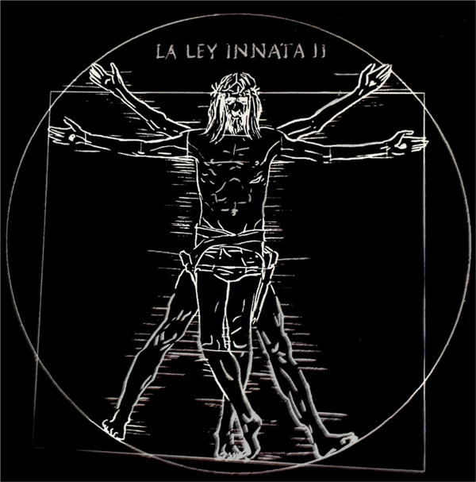

NOTICIAS

Nuestro cantante Roberto Iniesta ha publicado su nuevo álbum: MAYÉUTICA. Este está dividido en movimientos, y el primero es Después de la Catarsis, seguido de Mierda de filosofía y de Un instante de luz.
Robe hace un comunicado de la nueva Gira de 2024 por España: Ni santos ni inocentes.
Robe cumplió 60 años el año pasado y la fábrica de guitarras artesanas guitarras Bros, le regaló una hecha de una madera con los mismos años que él.
El 12 de septiembre se celebrará el día del Rio en Extremadura, donde la gente del pueblo y alrededores colaborará con su limpieza.
ROBE INIESTA · EXTREMODURO
Redes sociales: ig:@extremoduro_oficial · Spotify: Extremoduro
Mail: extremoduro@contrataciones.com
Copyright © 2024